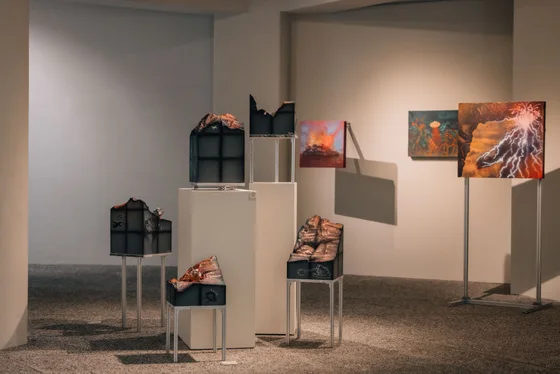
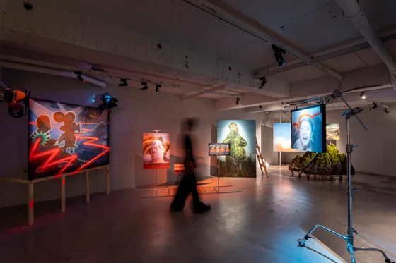
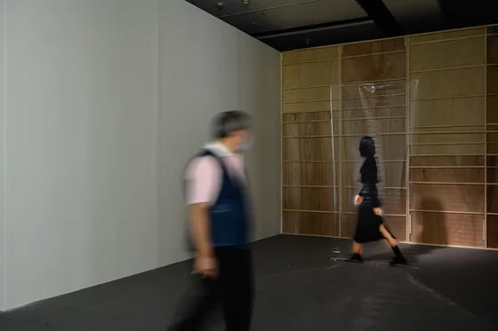
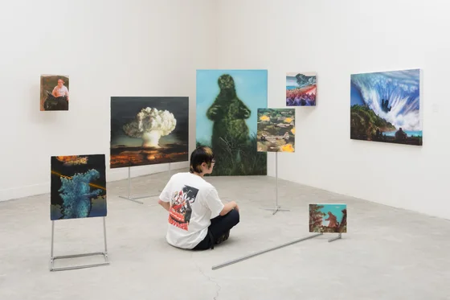
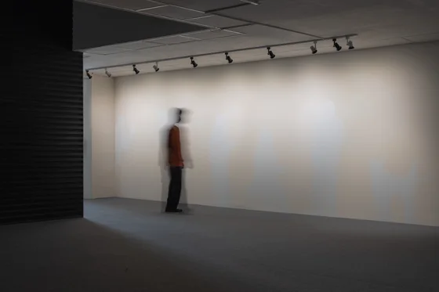

PUWEI WU / Exhibitions
Exhibitions展覽現場

倒風內山：文明發酵術
2026藝非凡非術館，臺南，臺灣

怪獸繁榮
2025Kaiju Boom
福利社，臺北，臺灣

2025基隆潮藝術
2025福氣委託行，基隆，臺灣

第三屆馬祖國際藝術島
2025馬祖日報故事館，連江，臺灣

遺物址
2025關渡美術館，臺北，臺灣

歡迎光臨介力屋
2025水谷藝術，臺北，臺灣
作品照片待補
Images to follow
Images to follow
not / A SOLDIER
2025黃金町，橫濱，日本

小事一樁，大戰一場
2024–2025A Little Thing, A Grand Swing
ss space space，八里，新北，臺灣

2024城西生活節
2024剝皮寮歷史街區，臺北，臺灣

黃金町巴扎2024
2024Koganecho Bazaar 2024 — The World, Not According to Art
黃金町地區，橫濱，日本

看他一臉扁平
2023He Looks SUPERFLAT.
新竹市鐵道藝術村，新竹，臺灣

Signal Z
2023台北當代藝術館，臺北，臺灣

2022北藝當代創作獎
2022關渡美術館，臺北，臺灣